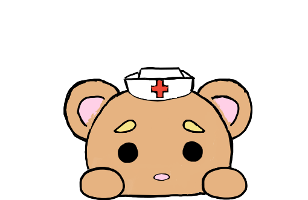

We can help. You are not alone.
Information:
What are the different types of depression?
Two of the most common forms of depression are:
Major depression—having symptoms of depression most of the day, nearly every day for at least 2 weeks that interfere with your ability to work, sleep, study, eat, and enjoy life. An episode can occur only once in a person’s lifetime, but more often, a person has several episodes.
Persistent depressive disorder (dysthymia) having symptoms of depression that last for at least 2 years. A person diagnosed with this form of depression may have episodes of major depression along with periods of less severe symptoms.
Some forms of depression are slightly different, or they may develop under unique circumstances, such as:
Perinatal Depression: Women with perinatal depression experience full-blown major depression during pregnancy or after delivery (postpartum depression).
Seasonal Affective Disorder (SAD): SAD is a type of depression that comes and goes with the seasons, typically starting in the late fall and early winter and going away during the spring and summer.
Psychotic Depression: This type of depression occurs when a person has severe depression plus some form of psychosis, such as having disturbing false fixed beliefs (delusions) or hearing or seeing upsetting things that others cannot hear or see (hallucinations).
Other examples of depressive disorders include disruptive mood dysregulation disorder (diagnosed in children and adolescents) and premenstrual dysphoric disorder. Depression can also be one phase of bipolar disorder (formerly called manic-depression). But a person with bipolar disorder also experiences extreme high euphoric or irritable moods called mania or a less severe form called hypomania.
Goals: ......
SUCCESS STORIES:
YOU can control your life,
qoutes:
Hotlines you can call for more help: 1-800-273-8255. The National Suicide Prevention Lifeline.
Depression Hotline: 1-630-482-9696